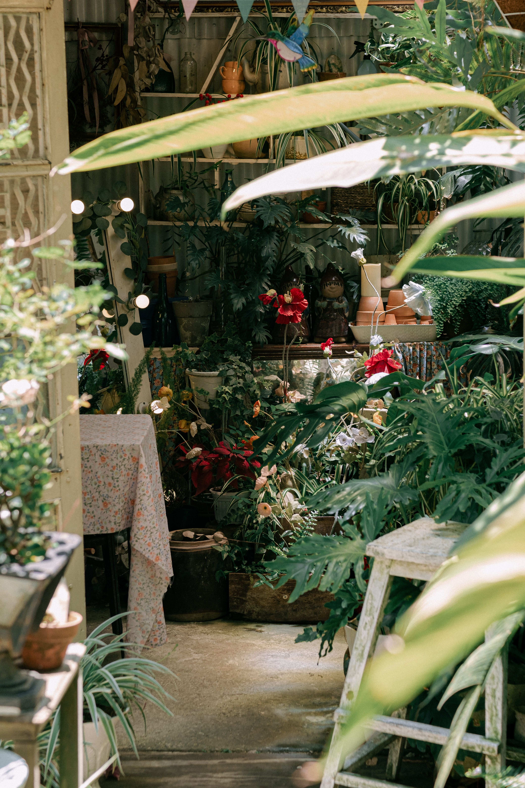
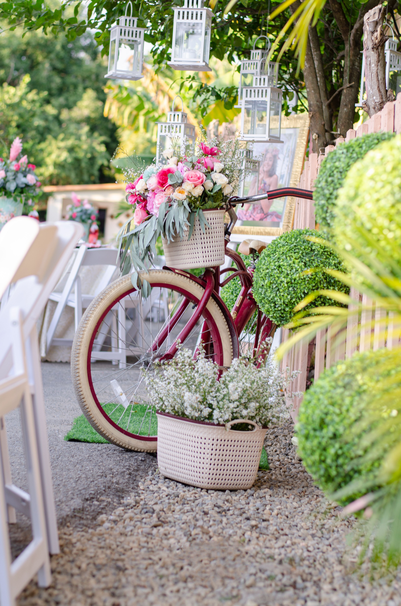

Creating a cozy home is less about following a specific decorating trend and more about combining comfort, practical organization, warm lighting, texture, and personal details. The goal is to make each room pleasant to use while keeping the home easy to maintain.
In This Article
- Start With How You Want the Home to Feel
- Use Warm and Layered Lighting
- Choose a Consistent Color Palette
- Add Texture Through Textiles
- Use Rugs to Define Areas
- Bring in Natural Materials
- Include Plants Where Conditions Are Suitable
- Display Personal Objects Selectively
- Create Comfortable Conversation Areas
- Make the Entry Feel Welcoming
- Create Small Places to Pause
- Reduce Visual Clutter
- Organize Storage Around Daily Habits
- Make the Bedroom Feel Restful
- Add Warmth to the Kitchen
- Use Scent Carefully
- Adapt the Home Through the Seasons
- Keep Comfort Practical
- Let the Home Develop Gradually
- Frequently Asked Questions
- Conclusion
- Use a Room-by-Room Comfort Check
- Use a Room-by-Room Comfort Check
- Use a Room-by-Room Comfort Check
- Use a Room-by-Room Comfort Check
- Use a Room-by-Room Comfort Check
- Use a Room-by-Room Comfort Check
- Use a Room-by-Room Comfort Check
- Use a Room-by-Room Comfort Check
Start With How You Want the Home to Feel
A cozy home is not defined by one decorating style. It is a place that feels comfortable, personal, and easy to live in. Before buying anything, decide what makes you feel at ease: warm lighting, soft textiles, natural materials, uncluttered rooms, family photographs, books, plants, or a particular color palette.
Use those preferences as a filter. A trend may look attractive online but still feel wrong in your own home. The goal is to create rooms that support daily routines and make people want to stay.
Walk through each room and identify what currently feels cold, inconvenient, empty, or overly busy. Small targeted changes are often more effective than replacing everything.
Use Warm and Layered Lighting
Lighting has a strong effect on atmosphere. Instead of relying only on one bright ceiling fixture, combine general lighting with table lamps, floor lamps, or task lights where appropriate.
Different activities need different levels of illumination. A reading chair benefits from focused light, while a living room used for conversation may feel more comfortable with softer ambient lighting.
Use bulbs and fixtures compatible with the intended use and keep safety in mind around cords, heat, children, and pets.
Choose a Consistent Color Palette
A limited palette helps rooms feel connected and calm. Warm neutrals, earthy colors, muted greens, soft blues, and natural wood tones are common choices, but any colors can feel cozy when used intentionally.
Repeat a few tones from room to room rather than introducing a completely unrelated scheme in every space. This creates continuity without making the home monotonous.
Test paint and textile colors in the actual room because natural and artificial light can change how they appear.
Add Texture Through Textiles
Blankets, cushions, curtains, rugs, and upholstered surfaces can soften rooms visually and physically. Mix textures rather than using many competing patterns.
Choose fabrics according to the household. Washable, durable materials may be more practical in homes with children or pets.
Do not add textiles simply to fill space. A few useful, comfortable pieces can create more warmth than a large number of decorative items.
Use Rugs to Define Areas
A rug can visually anchor a seating group, dining area, bedside zone, or reading corner. Choose a size that relates properly to the furniture rather than floating awkwardly in the middle of the floor.
Consider cleaning, door clearance, and trip risk when choosing thickness and placement.
In open-plan rooms, rugs can help distinguish functions while maintaining an overall connected layout.
Bring in Natural Materials
Wood, stone, woven fibers, ceramic, linen-like fabrics, and other natural-looking materials often add visual warmth because of their texture and variation.

You do not need to use them everywhere. A wooden table, woven basket, ceramic lamp, or textured tray may be enough to soften a room.
Balance natural materials with the practical needs of the space, especially in kitchens, bathrooms, and high-traffic areas.
Include Plants Where Conditions Are Suitable
Plants can add color, texture, and life to an interior. Choose species according to available light, temperature, humidity, and the amount of care you can provide.
Do not place a plant in a dark corner simply because the empty space needs decoration. Select a plant that can genuinely tolerate the conditions or choose another decorative solution.
Use stable containers and protect surfaces from water.
Display Personal Objects Selectively
Photographs, books, travel objects, handmade pieces, and inherited items can make a home feel personal rather than staged.
Choose meaningful objects and give them enough visual space. When every shelf is full, individual pieces lose impact and cleaning becomes more difficult.
Rotate displays occasionally instead of keeping everything visible at once.
Create Comfortable Conversation Areas
Arrange seating so people can talk without shouting across a large room. Chairs and sofas should relate to one another rather than automatically facing only a television.
Leave clear circulation around the group and provide a surface within reach for drinks or everyday items.
Comfortable social layouts make a home feel welcoming because they support how people actually interact.
Make the Entry Feel Welcoming
The entrance creates the first impression of the home and also needs to handle daily clutter. A small shelf, hooks, shoe storage, mirror, or bench can make the area more useful when space allows.
Keep the route clear and avoid turning the entry into a storage overflow zone.
A simple light source and one personal detail can create warmth without taking much space.
Create Small Places to Pause
A cozy home benefits from small purposeful corners: a chair near a window, a breakfast spot, a reading corner, or a bench in a hallway.
These areas do not need to be elaborate. One comfortable piece, appropriate light, and a nearby surface may be enough.
Use corners that would otherwise be overlooked, but preserve circulation and avoid forcing furniture into every empty space.
Reduce Visual Clutter
Cozy does not mean crowded. Too many visible objects can make a room feel stressful and difficult to maintain.
Give frequently used items convenient storage and remove objects that no longer serve a purpose. Leave some surfaces partly empty.
A calmer background allows textiles, lighting, art, and personal objects to have more impact.
Organize Storage Around Daily Habits
Storage works best when it is close to where an item is used. Keep blankets near seating, everyday dishes near food preparation areas, and entry items near the door.
Closed storage can reduce visual noise, while open storage works well for attractive objects that are kept organized.
Do not buy organizers before deciding what actually needs to be stored.
Make the Bedroom Feel Restful
In the bedroom, prioritize a comfortable bed, easy lighting, clear pathways, and enough storage to prevent everyday clutter from building up.
Soft bedding, curtains, a small rug, and a limited color palette can create warmth without excessive decoration.

Keep bright screens, unnecessary work items, and piles of objects from dominating the sleeping area when possible.
Add Warmth to the Kitchen
Kitchens are functional spaces, but they can still feel welcoming. Wood accents, a small plant where conditions are suitable, attractive everyday ceramics, or warm lighting can soften hard surfaces.
Keep worktops usable. Decoration should not reduce food-preparation space or make cleaning difficult.
A small dining or breakfast area can also make the kitchen feel more social.
Use Scent Carefully
A pleasant-smelling home can feel welcoming, but fragrance preferences vary and strong scents can be uncomfortable for some people.
Fresh air, clean textiles, and regular cleaning should be the foundation. Candles or diffusers are optional additions, not substitutes for ventilation.
Follow fire and product safety guidance and keep fragranced products away from children and pets where necessary.
Adapt the Home Through the Seasons
Small seasonal changes can refresh the atmosphere without requiring a complete redesign. A lighter throw in warm months or a heavier texture in cooler weather may be enough.
Change only what improves comfort. Seasonal decorating should not create large amounts of storage or work unless you genuinely enjoy it.
Natural light and temperature change during the year, so furniture and textiles can be adjusted accordingly.
Keep Comfort Practical
A beautiful room is not cozy if furniture is uncomfortable, lighting is poor, or daily objects are difficult to reach.
Test the home through normal routines. Sit in the chairs, read under the lamps, open drawers, walk through the room, and notice where frustration occurs.
Practical improvements often make a home feel more welcoming because they reduce small daily inconveniences.
Let the Home Develop Gradually
Cozy interiors often feel collected over time rather than purchased all at once. Allow space for objects, art, and furniture that have real meaning.
Living with a room for a while helps you understand what it actually needs. An empty wall or corner does not always require immediate filling.
Gradual decisions can also reduce unnecessary spending and make the final result more personal.
Frequently Asked Questions
What makes a home feel cozy?
Comfortable lighting, useful furniture, soft textures, personal objects, an intentional color palette, and low visual clutter all contribute, but the exact combination is personal.
Do I need warm colors?
No. Cool or neutral colors can also feel cozy when balanced with texture, lighting, natural materials, and comfortable furnishings.
Can a minimalist home feel cozy?
Yes. Minimalism can feel warm when the few objects present have texture, good proportions, personal meaning, and comfortable lighting.
How can I make a room cozy on a small budget?
Rearrange furniture, improve lighting, remove clutter, use existing textiles differently, display meaningful objects, and add inexpensive details only where they solve a real need.
Are plants necessary?
No. Plants can add life and texture, but only when the conditions suit them. Art, textiles, wood, ceramics, and personal objects can provide warmth too.
Conclusion
A cozy home is built through many small decisions that support comfort and daily life. Use layered lighting, a consistent palette, useful textiles, natural materials, personal objects, and furniture arranged around real activities. Reduce visual clutter and keep storage practical. Most importantly, let the home develop gradually so that the final atmosphere reflects the people who live there rather than a temporary trend.
Use a Room-by-Room Comfort Check
At the end of a normal day, notice where you naturally sit, which lights you turn on, where clutter collects, and which objects are difficult to reach. These observations reveal practical opportunities that decorative inspiration alone may miss.
Improve one inconvenience at a time. Small changes in furniture position, storage, lighting, or textiles can gradually make the entire home feel easier and more welcoming.
Use a Room-by-Room Comfort Check
At the end of a normal day, notice where you naturally sit, which lights you turn on, where clutter collects, and which objects are difficult to reach. These observations reveal practical opportunities that decorative inspiration alone may miss.
Improve one inconvenience at a time. Small changes in furniture position, storage, lighting, or textiles can gradually make the entire home feel easier and more welcoming.
Use a Room-by-Room Comfort Check
At the end of a normal day, notice where you naturally sit, which lights you turn on, where clutter collects, and which objects are difficult to reach. These observations reveal practical opportunities that decorative inspiration alone may miss.
Improve one inconvenience at a time. Small changes in furniture position, storage, lighting, or textiles can gradually make the entire home feel easier and more welcoming.
Use a Room-by-Room Comfort Check
At the end of a normal day, notice where you naturally sit, which lights you turn on, where clutter collects, and which objects are difficult to reach. These observations reveal practical opportunities that decorative inspiration alone may miss.
Improve one inconvenience at a time. Small changes in furniture position, storage, lighting, or textiles can gradually make the entire home feel easier and more welcoming.
Use a Room-by-Room Comfort Check
At the end of a normal day, notice where you naturally sit, which lights you turn on, where clutter collects, and which objects are difficult to reach. These observations reveal practical opportunities that decorative inspiration alone may miss.
Improve one inconvenience at a time. Small changes in furniture position, storage, lighting, or textiles can gradually make the entire home feel easier and more welcoming.
Use a Room-by-Room Comfort Check
At the end of a normal day, notice where you naturally sit, which lights you turn on, where clutter collects, and which objects are difficult to reach. These observations reveal practical opportunities that decorative inspiration alone may miss.
Improve one inconvenience at a time. Small changes in furniture position, storage, lighting, or textiles can gradually make the entire home feel easier and more welcoming.
Use a Room-by-Room Comfort Check
At the end of a normal day, notice where you naturally sit, which lights you turn on, where clutter collects, and which objects are difficult to reach. These observations reveal practical opportunities that decorative inspiration alone may miss.
Improve one inconvenience at a time. Small changes in furniture position, storage, lighting, or textiles can gradually make the entire home feel easier and more welcoming.
Use a Room-by-Room Comfort Check
At the end of a normal day, notice where you naturally sit, which lights you turn on, where clutter collects, and which objects are difficult to reach. These observations reveal practical opportunities that decorative inspiration alone may miss.
Improve one inconvenience at a time. Small changes in furniture position, storage, lighting, or textiles can gradually make the entire home feel easier and more welcoming.